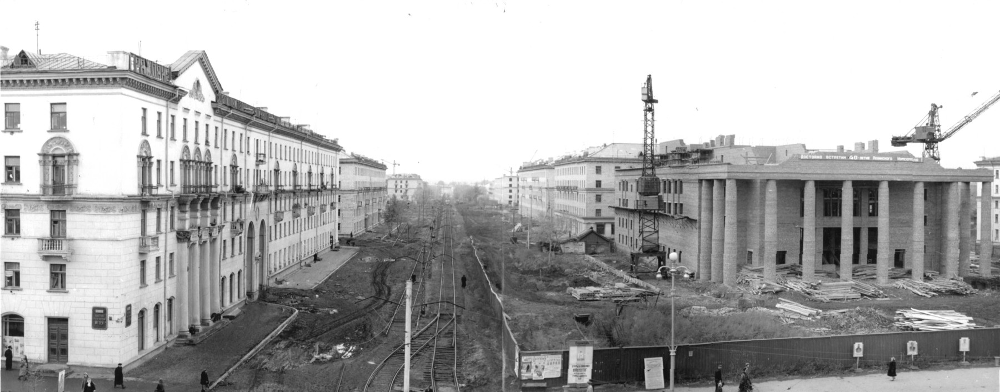
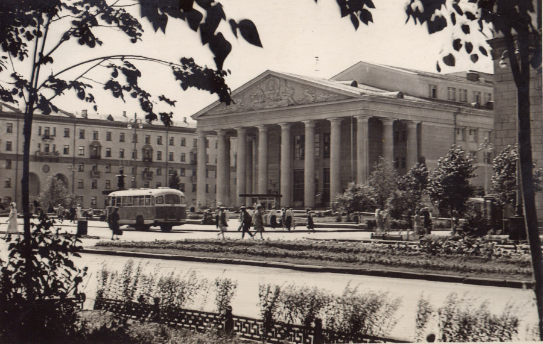
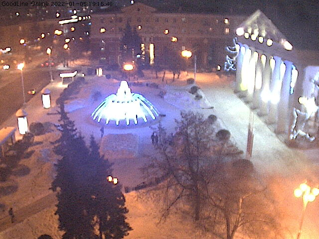

Здание современного кемеровского Драмтеатра было построено в 1960 году.
Драмтеатр расположен в самом центре города, на проспекте Советский. Его здание фактически перекрывает улицу Весенняя, которая ведёт нас от Политехнического университета к набережной.
Интересно, что раньше по проспекту ходили трамваи и, огибая Драмтеатр, поворачивали на Весеннюю.

В разные годы на сцене театра начинали свой творческий путь несколько ставших известными позже актёров: Георгий Бурков, Михаил Светин, Людмила Аринина.

Площадь у Драмтеатра сегодня, а в особенности цветомузыкальный фонтан — излюбленное место отдыха горожан, а один раз в год и десантников.
В сторону площади перед Драмтеатром много лет направлена веб-камера, поэтому увидеть происходящее там может каждый.

В современном мире веб-камерой может служить любой смартфон. Билайн показал во время тестирования 53,15 мегабита. Этого хватит, чтобы транслировать происходящее вокруг своим друзьям.